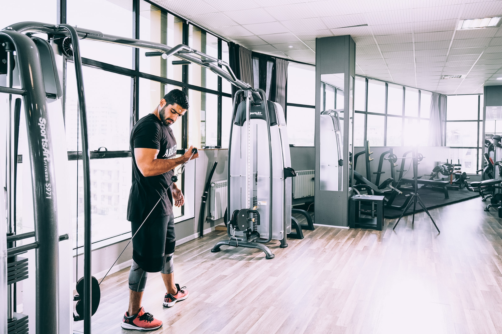
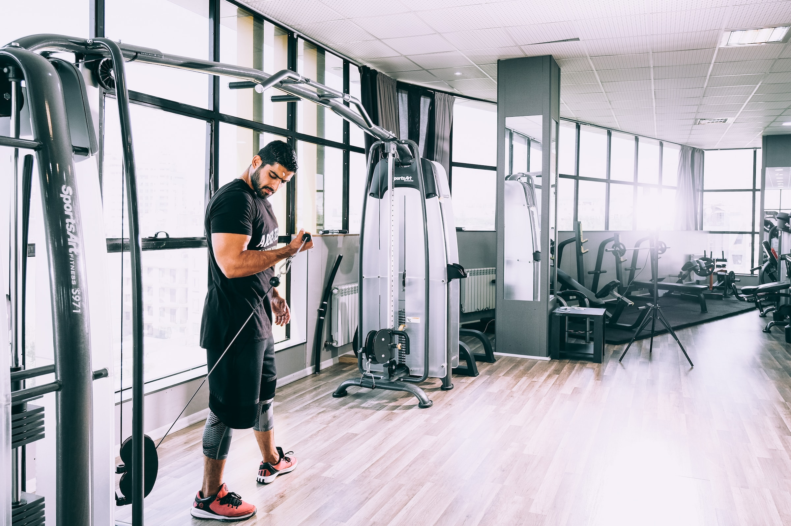

About us
ML Strength are Australia's newest brand in health and fitness, with
gyms opening throughout the Brisbane metropolitan area. Whether your
goal is weight loss, body building, nutrition or diet improvements,
having more energy, or just looking and feeling better - we're here
for you!
Our trainers are all
Les Mills accredited instructors and all have Bachelor
Degrees in Human Movements. We are a family operated business that has
little to do with the rest of the fitness industry.
You are always welcome to look through any of our gyms at your own
pace, with no pressure whatsoever. Our 'no obligation, no pressure'
attitude is clearly evident with our
$10 CASUAL visit rate.
We have created gyms that we
would love to train in and share that passion and enthusiasm with our
valued members. We are open 24:7. YOU can now train any
time you like, weekdays, weekends & public holidays. We are staffed
all the time. If you need a late night workout, a protein bar or
shake, supplements or a cool t-shirt, we are open for you. Our class
times change constantly so check out on the web site for the timetable
at each of our clubs.
ML Strength are Australia's newest brand in health and fitness, with
gyms opening throughout the Brisbane metropolitan area. Whether your
goal is weight loss, body building, nutrition or diet improvements,
having more energy, or just looking and feeling better - we're here
for you!
Our trainers are all
Les Mills accredited instructors and all have Bachelor
Degrees in Human Movements. We are a family operated business that has
little to do with the rest of the fitness industry.
Our 'no
obligation, no pressure' attitude is clearly evident with our
$10 CASUAL visit rate
YOU can now train any time
you like, weekdays, weekends & public holidays. We are open
24:7.
 
